複雑なナノ構造のミネラル系のマイクロラマンスペクトル
Customize-MutliLines-Graph
概要
このチュートリアルは、複数の折れ線を作成し、編集する方法を説明しています。
- 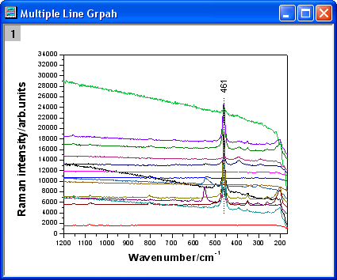
必要なOriginのバージョン: Origin 2015 SR0以降
ステップ
- 新しいワークシートを作成します。ヘルプ: フォルダを開く: サンプルフォルダを選択して、サンプルフォルダを開きます。このフォルダ内のGraphingサブフォルダにあるMicro_Raman_Spectroscopy.DAT ファイルを探します。空のワークシートにファイルをドラッグアンドドロップしてインポートします。
- 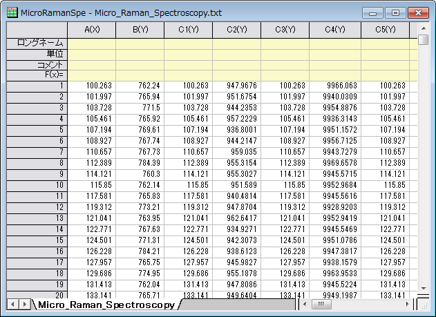
- ワークシートのすべての列を選択します。右クリックして、ショートカットメニューから列XY属性の設定：XY XYを選びます。2Dグラフギャラリーツールバーの折れ線ボタンをクリックします。
- 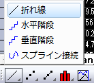
- 凡例を削除します。グラフは次のようになります。
- 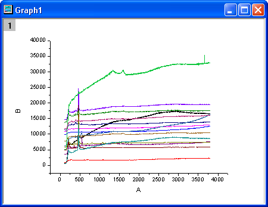
- X軸をダブルクリックして、軸ダイアログボックスを開きます。スケールタブで、以下のスクリーンショットのように設定します。
- 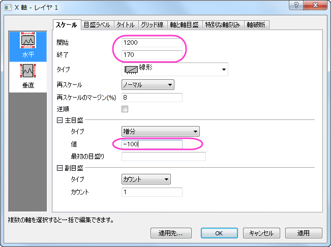
- 左側パネルで垂直アイコンをクリックし、Y 軸のスケールタブを開きます。以下の図のように設定を行い、OKをクリックします。
- 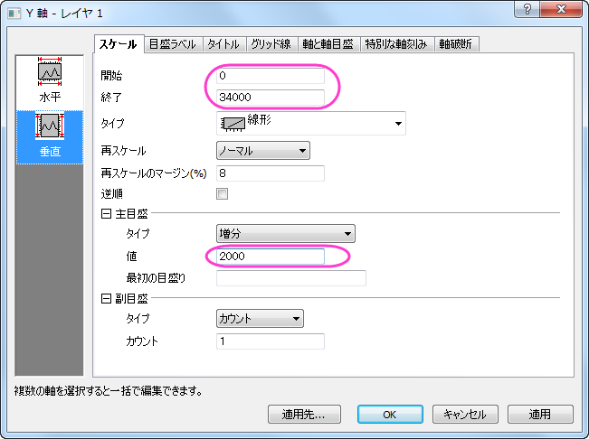
- では、グラフにテーマを適用して上X軸と右Y軸を追加します。環境設定：テーマオーガナイザを選択して、テーマオーガナイザダイアログを開きます。グラフ タブをアクティブにし、表からOpposit Lines を選択します。そして、今すぐ適用ボタンをクリックします。閉じるをクリックしてダイアログを閉じます。
- 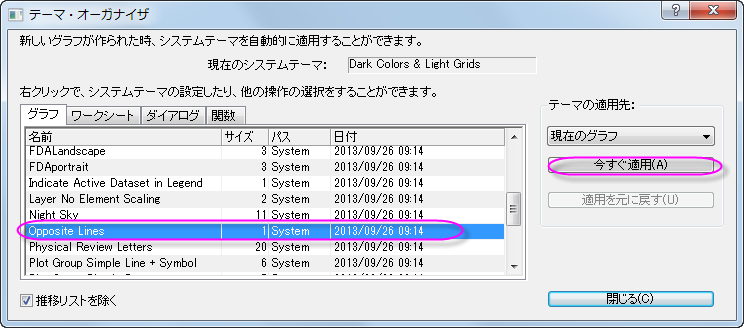
- ツールツールバーの直線ツールをクリックし、サンプルの図のようにピークの中心をまたぐように線を引きます。Shift キーを押しながら、垂直線になるように線を引きます。線上でダブルクリックします。線タブで、種類から破線を選びます。OKをクリックします。
- 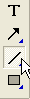
- プロット操作・オブジェクト作成ツールバーのテキストボタンをクリックします。線オブジェクトの近くにテキストオブジェクトを追加し、テキストオブジェクトに461と入力します。
- 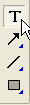
- テキストオブジェクトを右クリックして、ショートカットメニューからプロパティを選択します。ダイアログのテキストで、以下のスクリーンショットのように設定します。OKをクリックします。
- 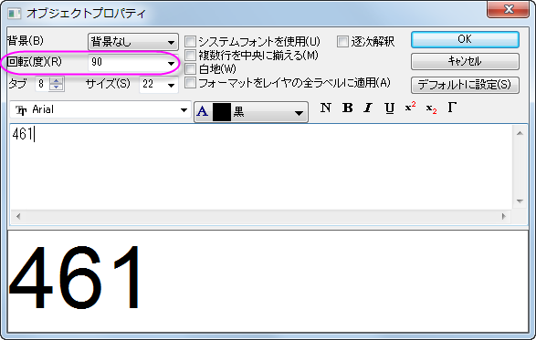
- Y軸のタイトルを右クリックして、ショートカットメニューからオブジェクトの表示属性を選びます。ダイアログのテキスト で、編集ボックスにRaman intensity/arb.units と入力し、それを選択して 太字 ボタンをクリックします。さらにサイズを28 に変更します。OKをクリックします。

- X 軸タイトルを右リックして、ショートカットメニューからオブジェクトの表示属性を選択します。ダイアログのテキスト で、編集ボックスにWavenumber/cm-1 と入力し、それを選択して 太字 ボタンをクリックします。さらにサイズを28 に変更します。-1を選択して、上付きボタンをクリックします。OKをクリックします。
- 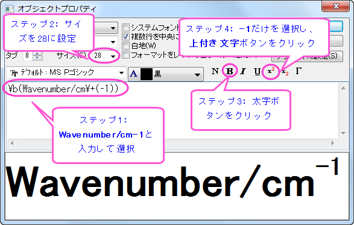
- グラフは次のようになります。